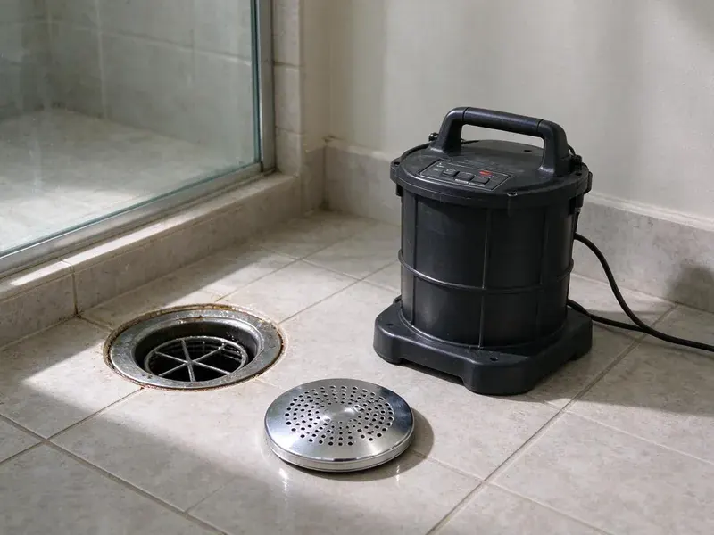

Drain Unblocking in Sun Valley, NV
Stubborn blockage in Sun Valley, NV? FMR Plumbing brings the closet auger, the drum machine and a sewer cable on one truck.
- Price Given Before We Start
- No Hidden Fees
- Toilets, Sinks & Showers
- Fast Unblocking

Toilet Backing Up? We Clear It Fast in Sun Valley, NV
Licensed plumbers clear the blockage and test the fixture before leaving.
Drain Unblocking in Sun Valley, NV for Toilets, Tubs, Sinks and Showers
FMR Plumbing handles blocked drains in homes and businesses across Sun Valley, NV. Each fixture has its own usual culprit, and we carry the right cable and head for it. Most calls take an hour.
Our expertise includes:
- Cables and heads for small to large drains
- Water Jetting for Grease-Packed Lines
- Water jetting when a cable will not hold

Additional Drain Services Services in Sun Valley, NV
From stubborn kitchen clogs to main sewer backups, our drain services in Sun Valley, NV clear the line and keep it clear with camera-verified results.


Customers
Why Choose FMR Plumbing for Drain Unblocking in Sun Valley, NV?
Clearing the blockage is half the job. The other half is telling you what caused it, whether that is grease habits, a low-flow toilet with a narrow trapway or roots getting into the main through a cracked joint. Knowing prevents repeats. You hear exactly what we pulled out.
- Fixtures Protected, Sleeved closet augers clear toilets and leave the porcelain clean.
- Cause Explained, You hear what caused the blockage so you can avoid a repeat.
- Local Experience, Our plumbers know the water quality and soil in Nevada that often feed into blockages.
Citywide Coverage
Across Sun Valley and nearby towns, FMR Plumbing handles blocked drains of every kind. Spread-out trucks keep drive times short for urgent calls. Fast arrival matters.
Experienced Team
The FMR Plumbing team gets ongoing training on drain tools and safety. Our techs handle cable machines safely, with gloves on and the cable under control. Safety is routine.
Safety-First Approach
Protecting your property and our crew comes first. We use protective equipment around sewage, follow established safety guidelines for cable machines, and keep children and pets away from the work area. Pets should stay inside.
Trusted Certified Sun Valley Plumbing Services Professionals
At FMR Plumbing, we take pride in licensed, certified plumbing services throughout Sun Valley, NV. Credentials matter in this trade. Our plumbers hold recognized industry credentials, and they follow strict safety and quality rules on every repair, installation and maintenance call we run.
Call Us Now PHCC Plumbing Contractor Recognition
PHCC Plumbing Contractor Recognition Better Business Bureau (BBB) Accreditation
Better Business Bureau (BBB) Accreditation Angi Certified Pro
Angi Certified Pro ISO 9001 Quality Management Certification
ISO 9001 Quality Management CertificationFast Drain Unblocking in Sun Valley, NV
Unblocking Toilets With Objects Stuck in Sun Valley
Paper, wipes, pads and toys all block toilets. The sleeved auger handles most, though a hard object usually means lifting the toilet. We reset on a fresh wax ring. We test several flushes before leaving. Narrow trapways clog more often.

Main Line Blockages in Sun Valley
Several drains blocked at once points to the main. Finding the cleanout comes first, then a heavy cable with a cutter runs toward the street. Expect roots or wipes. Once flow returns, a camera inspection can show what is going on inside the pipe.
Bathroom Sink Unblocking in Sun Valley, NV
Hair, toothpaste and soap scum. Mix those with hard water minerals and they form a gray paste on the pop-up stopper and in the P-trap, which is where we start because cleaning those two parts fixes most bathroom sinks. Deeper clogs get a small cable. We can swap an old trap while we are there.
Shower and Bathroom Sink Unblocking in Sun Valley, NV
Hair and soap scum seal shower drains. We take off the strainer or stopper, pull out the hair mat by hand or with a small auger, and run a cable deeper if the blockage sits past the trap in the branch line. We stick to mechanical tools. Your shower drains properly before we leave.
Blocked Shower and Tub Drains in Sun Valley
Shower drains block slowly, then all at once. Hair and scum build until one day the shower will not drain at all. We start at the strainer. Deeper clogs get a cable through the overflow.
Main Sewer Blockages in Older Homes in Sun Valley, NV
Older clay laterals invite roots. Hard water and slab construction make pinhole leaks in copper lines a common repair in older neighborhoods. Fine root hairs slip into the joints of old clay and cast iron sewer pipe and grow into a mat that catches paper and solids until every drain in the house slows or stops. We cut the roots out. We follow up with a camera.
Jetting Repeat Blockages in Sun Valley
Same drain, third time this year. When a cable keeps opening the line and it keeps closing, the pipe walls are usually coated in grease or scale, and jetting scours them back to clean pipe so the next clog has nothing to start on. It costs more per visit. Fewer visits make up for it.

Commercial Blocked Drains in Sun Valley
A blocked restroom can close a store. We unblock toilets, urinals, floor drains and kitchen lines for restaurants, offices, schools and retail spaces, working quickly so customers and staff are not stepping around a tech for long. We can come after close. Service reports go in your records.
Drain Unblocking Near You in Sun Valley, NV
Searching for drain unblocking near you in Sun Valley, NV? FMR Plumbing has trucks working the area every day. That usually means a tech can get to a blocked toilet or sink the same day, often within a few hours of your call, with the tools to clear it on that visit. Speed matters here.
Working locally, we see the same causes over and over. Wipes in toilets, grease in kitchen lines and hair in showers account for most of our calls, and that experience helps us clear the blockage quickly and give tips that fit how your home is plumbed. Tips come free.
FMR Plumbing at a Glance
- Fully licensed plumbing team covering Sun Valley, NV
- Same-day appointments and 24/7 emergency response
- Upfront, flat-rate pricing before work begins
- 4.8-star rated by 903+ Nevada customers
Sun Valley Map
Sun Valley Information
- Population
- 21,178
- Area codes
- Local
- Service area
- Sun Valley and towns within a 40 mile drive
- Nearby
- Sparks, Reno, Fernley, Carson
Scale narrows old drain pipe in Sun Valley, NV homes until one handful of hair stops it cold. Water in much of Nevada is very hard, and scale buildup is one of the most common reasons water heaters and fixtures fail early.
Talk to a Plumber
Reach out to FMR Plumbing for reliable plumbing work done by licensed pros in Sun Valley, NV.
Our Specialized Plumbing Services in Sun Valley, NV
At FMR Plumbing, we handle the full list of plumbing services across Sun Valley, NV. From leak detection to full system installs, our team works fast and charges fair prices on homes and commercial properties alike. Here are the core services we offer:


Blocked to Clear: Unblocking in Sun Valley, NV
We follow the same steps on each blocked drain call in Sun Valley, NV.
Call for a Price
Call (725) 360-1766 and tell us what happened. You get a ballpark and a time.
Locate the Blockage
Your tech checks connected fixtures to find it. Then we pick the tool.
Clear and Confirm
We remove the blockage and run plenty of water. You get tips to avoid a repeat.
Frequently Asked Questions About Drain Unblocking in Sun Valley
Most single-fixture calls in Sun Valley cost $125 to $300. Mains often cost $200 to $450, with $100 to $200 extra for a toilet pull.
Not for clearing a blockage. If the work turns into replacing a section of sewer pipe or changing the plumbing, a permit from the local building department is usually required, and we handle it.
Usually a narrow trapway, a partial blockage in the line or a venting problem. We can find which one it is.
Closet augers, drum machines, sectional cables and inspection cameras. Our gear comes from brands like RIDGID and General Wire.
They can be. Caustic and acid openers generate heat and can damage older pipe and fittings, they are hazardous to skin and eyes, and they often leave the blockage in place anyway. Tell us if you used one.
Put grease in the trash, not the sink. Hair catchers in showers, flushing only toilet paper and a periodic professional cleaning keep most drains open, especially in older homes with rough cast iron or galvanized pipe. Simple steps help.
One to two hours for most single-fixture jobs. Mains with camera or jetting work run three to five hours.
No. Most wipes do not break down like toilet paper and are a leading cause of blockages.
What People Are Saying About Our Plumbing Experts?

James P.
Our restaurant had a slow leak at the hand sink that was rotting the cabinet base. FMR Plumbing came in at six in the morning before prep, replaced the trap and both supply lines, and was packed up before my first cook clocked in.
Commercial Plumbing · Elko, NV
Lisa C.
Water was pouring out from under the washing machine on a holiday weekend. FMR Plumbing talked me through closing the valves over the phone and had a plumber at the house within ninety minutes. It was a burst fill hose.
Emergency Plumbing · Carson, NVMarcus H.
Grease from the fryer line kept clogging the kitchen drain at my diner. FMR Plumbing hydro jetted the line after closing, showed me the buildup on camera, and set us up on a quarterly cleaning so it does not catch us on a Friday again.
Drain Cleaning · Carson, NV
Monica A.
Our water bill nearly doubled in one month with no change in how we used water. The tech checked the meter, heard the leak under the hallway with his equipment, and opened a hole about a foot square. Fixed the same day.
Slab Leak Repair · Fernley, NV
Paul B.
Our pit pump ran nonstop even in dry weather. The plumber found the check valve was stuck open, so the same water kept cycling back into the pit. New valve, new float switch, done in an hour. It runs quiet now.
Sump Pump · Carson, NVRachel N.
Hard water was leaving white crust on every faucet and our dishwasher was struggling. The tech tested the water, recommended a softener sized for a family of five, and installed it with a bypass valve in one afternoon. The spots on our glasses are gone.
Water Softener · Fernley, NV